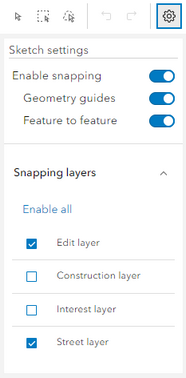

When the map is displayed alongside the Street form additional tools are displayed for you to maintain the geometry, but only when you are displaying the attributes for an ESU or ASD record (Part of road).

The bottom layer of tools is only displayed if you have used one of the select tools to select either the ESU or ASD graphics.
If you have selected to Add ESU or to make an ASD record Part of road, then an extra tool is added to the toolbar to allow you to draw a polyline.

Map tools (top)
Select feature
This tool allows you to click on a single polyline on the map. Once a polyline has been selected you will see orange nodes representing each change in direction. You will also see smaller white nodes between each orange node. You may click on the orange nodes and move them to reshape your polyline or click on a white node to add a new node to your polyline.
Select by rectangle
This is also called marquee select. You may use this tool to draw a rectangle on the map to select any polylines within the rectangle.
Select by lasso
You may use this tool to draw a lasso on the map, with the mouse, to select any polylines within the drawn area.
Draw a polyline
This tool is only available if you are creating ESUs or drawing ASD for Part of road. Selecting the tool allows you to draw a polyline on the map.
Undo
The Undo tool will cancel the last action made on the map. If you use the Undo tool to cancel a previous action the Redo tool becomes available.
Redo
The Redo tool will redo the previous Undo.
Sketch Settings

Map Tools (bottom)
The bottom line of the map tools shows the number of objects selected together with a Duplicate and Delete function. Clicking Delete will remove the selected feature from the map.